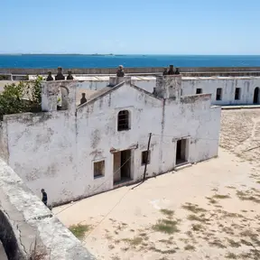

Património Mundial UNESCO, alma da costa swahili.
Texto da BD (destinations.description_pt).
Palácio de São PauloCidade de Pedra e Cal
Destaques da BD; "Stone Town" (nome de Zanzibar) por validar.
- Património Mundial desde 1991
- Fonte: UNESCO, whc.unesco.org/en/list/599
- Fortaleza de São Sebastião, iniciada em 1558
- Fonte: UNESCO, descrição do sítio 599
- 3 roteiros públicos
- Contagem da BD (província de Nampula)
Roteiros que passam aqui

Ilha de Moçambique: Património UNESCO
Ver roteiro3 dias · história, património, cultura, praia
Nacala e Baía de Memba
Ver roteiro3 dias · praia, natureza, vida local
Nampula: Cultura e Museus
Ver roteiro2 dias · cultura, história, vida local
Atividades com reserva
Ainda não há atividades com reserva aqui.
Conheces um guia ou uma cooperativa na Ilha? Indica-nos o negócio.
Conheces um guia ou uma cooperativa na Ilha? Indica-nos o negócio.